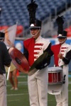

<!DOCTYPE html>
<html lang="en">

<script type="text/javascript" language="JavaScript">

NumberOfImagesToRotate = 318;


FirstPart = '';

function printImage() {
var r = Math.ceil(Math.random() * NumberOfImagesToRotate);
document.write(FirstPart + r + LastPart);
}
//-->
</script>

<head>
	<meta charset="UTF-8">
	<meta name="viewport" content="width=device-width, initial-scale=1">
	<meta name="viewport" content="width=device-width, initial-scale=1.0, minimum-scale=1.0, maximum-scale=1.0, user-scalable=no">

	<title>Colts Youth Organization - News</title>

	<link rel="shortcut icon" href="img/favicon.png">

	<meta name="description" content="">

	<!-- CSS -->
	<link href="css/preload.css" rel="stylesheet" media="screen">
	<link href="css/bootstrap.css" rel="stylesheet" media="screen">
	<link href="css/font-awesome.min.css" rel="stylesheet" media="screen">
	<link href="css/icon_colts.css" rel="stylesheet" media="screen">
	<link href="css/font-bank-gothic.css" rel="stylesheet" media="screen">
	<link href="css/animate.min.css" rel="stylesheet" media="screen">
	<link href="css/slidebars.css" rel="stylesheet" media="screen">
	<link href="css/lightbox.css" rel="stylesheet" media="screen">
	<link href="css/jquery.bxslider.css" rel="stylesheet">
	<link href="css/syntaxhighlighter/shCore.css" rel="stylesheet" media="screen">

	<link href="css/style-red.css" rel="stylesheet" media="screen" title="default">
	<link href="css/width-full.css" rel="stylesheet" media="screen" title="default">

	<link href="css/buttons.css" rel="stylesheet" media="screen">

	<!-- HTML5 shim and Respond.js IE8 support of HTML5 elements and media queries -->
	<!--[if lt IE 9]>
		<script src="js/html5shiv.min.js"></script>
		<script src="js/respond.min.js"></script>
	<![endif]-->

	<script type="text/javascript" src="http://coltsdci.tumblr.com/api/read/json"></script>

</head>

<!--#include file="includes/header.shtml" -->
<div id="include-header"></div>

<!--#include file="includes/menu.html" -->
<div id="include-menu"></div>

<header class="main-header">
  <div class="container">
    <h1 class="page-title pull-left">2005 News</h1>
    <span class="pull-right hidden-sm hidden-xs">
      	<script type="text/javascript" language="JavaScript"><!--
printImage();
//--></script>
		<script type="text/javascript" language="JavaScript"><!--
printImage();
//--></script>
		<script type="text/javascript" language="JavaScript"><!--
printImage();
//--></script>
    </span>
  </div>
</header>

<div class="container">
	<div class="row">
		<div class="col-xs-12">
			<!--<p class="slogan text-center animated bounceInLeft animation-delay-12">Join the Colts!</p> -->
			<a name="6" id="6"></a>
            <h1 class="section-title no-margin-top">2006 Colts Program Announced!</h1>
		</div>
	</div>
    		    <p><i>December 3, 2005</i></p>
                <p>The Colts announce their 2006 program entitled . . . <i>CONTINUUM!</i></p>
                <p>Exploring the concepts of time and motion, the Colts move toward a more contemporary sound and look, using musical literature that will include: "Windsprints" by Richard Saucedo, "Noisy Wheels of Joy" by Eric Whitacre, "As Time Goes By" from the cinema classic Casablanca and Samuel Hazo's "Ride."</p>
                <p>The 2006 Colts design team includes: Jude Boughton (Program Coordinator), Chris Tomsa (Brass Arranger), Nick Angelis (Percussion Arranger & Caption Head), Andrew Schnieder (Front Ensemble Arranger), Chad Dempsey (Visual Designer), and Carla Burgess-Tomsa (Color Guard Caption Head, Designer & Staff Coordinator.)</p>
                <p><i>Return to <a href= "news.html">Colts News</a></i>.</p>
    </div>
<!-- container -->  

<br>

<div class="container">
	<div class="row">
		<div class="col-xs-12">
			<!--<p class="slogan text-center animated bounceInLeft animation-delay-12">Join the Colts!</p> -->
			<a name="5" id="5"></a>
            <h1 class="section-title no-margin-top">Colts Announce Drum Major</h1>
		</div>
	</div>
    		    
                <p><i>March 1, 2005</i></p>
    <p>Ben Gervais, Drum Major</p>

    <p><b>Where are you from?</b>
    </p>
    <p>I am from a lot of places. Originally born in Chicago, IL, I moved to 
    Stillwater, MN. Then to Fargo, ND then back to Minneapolis, MN. I then moved to Lenexa, KS where I have been for the past 7 years. </p>
    <p><b>Where are you attending school?</b>
    </p>
    <p>Northwest Missouri State University in Maryville, MO. </p>
    <p><b>What is your major?</b>
    </p>
    <p>I am a percussion major studying music education. </p>
    <p><b>How did you feel when you were selected the Colts drum major?</b>
    </p>
    <p>Overwhelmed. I was a bit nervous after hearing everyone cheer. However, it was not til after I was announced that Lauren Paul our Cymbal tech approached me for a hug. At that moment, I began to cry with the realization that I was never going to march cymbals again. She told me she was proud of me, which brought a smile to my face despite the tears. Ending on a happy note, I am very excited to be offered this position. </p>
    <p><b>What can we expect from the Colts this season?</b>
    </p>
    <p>We have arrived. The Colts have been trying to define who they are and what they stand for. With a few changes and new additions, we are finally ready to unveil a legacy. More aggression and more intense emotional support will provide an exciting summer. I know for a fact that the other members and staff are excited about this summer.  I feel it is a huge turning point for the Colts. Everyone is pumped up and ready to go out on fire.</p>
    <p><b>What will you bring to the Colts as the drum major?</b>
    </p>
    <p>The staff is set, the show in place, and the members are ready to go. I plan on being intense and on fire from the very beginning. I plan on bringing into focus a high level of confidence for the Colts. Part of defining ourselves requires the confidence of the members portraying what it is they stand for. I will be there for every member when they need my help or encouragement. THIS is the year to be a Colt. Believe! </p>
    <p><b>Tell us about your experience in the Colts.</b>
    </p>
    <p>My experience began in the summer of 2002 with the cymbal line. There were four rookies and one vet.  It was a tough year, but we all came out on top as best friends. I had learned a lot from them, and most certainly a tons from Lauren Paul. My second summer (2003) was again with the cymbal line. We had three vets this time. This was the year we went to 6 in the cymbal line. I enjoyed my summer even more as a vet. I felt more aware of how to succeed individually and as a group. Lauren Paul again brought us to a brilliant success.  Arriving into my third summer with the cymbal line was just amazing. We knew we were bringing back six out of six vets. That and a combination of Lauren "Frau" Pauls' mastery would make us real good. However, that summer provided different challenges than I expected. Towards the end of this summer, I had decided that I wanted to expand my marching experience. I had made the decision to audition for drum major. My reasoning did not go unjustified. It was a very hard decision for me to make, because I knew that if I made drum major, I would never march cymbals again. I have been through hard times and great times with the Colts. That organization and its contributors have made me who I am today.
      
      
    </p>
    <p><b>How has the Colts made an impact on your life?</b>
    </p>
    <p>The Colts have made many impacts on my life. I have met some amazing people in the Colts. I met my best friend, the love of my life, and many influential individuals along the way. Jeremy Meyer only marched in 2002 on timpani, but that began something I had no idea could happen. He helped me pick out the college I was to attend. At Northwest Missouri State University, Jeremy helped me grow as a person outside of tour. For those of you that know, 'tour' is a completely different realm then that of 'anything else but tour'. Jeremy and I quickly became best friends at college, and I will be his best man in his wedding this upcoming May. Loren Berry has provided much support to me on and off tour. I never have met anyone as compassionate as her before.  She provides me a lot of the strength when I am down at school or on tour. Greg Orwoll is just an amazing motivational supporter. He helps out the organization non-stop. The cymbal line, Lauren Paul, and Ryan Thomas especially have helped me musically along the road. They are all amazing people that I will always cherish in my life. It makes a much more pleasurable marching experience if you trust the people that surround you, and I have had three amazing summers! </p>
    <p><b>Is there anything else you would like to add?</b>
    </p>
    <p>"We were born ready!" I am looking forward to being on the podium this summer. Being offered this position is a huge honor. I thank all the Colts members, staff, alumni, and volunteers for there relentless support. BELIEVE!</p>
    <p><i>Return to <a href= "news.html">Colts News</a></i>.</p>
    </div>
<!-- container -->  

<br>
      
    <div class="container">
	<div class="row">
		<div class="col-xs-12">
			<!--<p class="slogan text-center animated bounceInLeft animation-delay-12">Join the Colts!</p> -->
			<a name="4" id="4"></a>
            <h1 class="section-title no-margin-top">Colts Volunteer Wins Top Scouting Award</h1>
		</div>
	</div>
    		    
                <p><i>January 25, 2005</i></p>
                <p>"The Boy Scout motto is "Be Prepared"," said Bill Symoniak, an actively involved volunteer and parent for the Colts.  Bill is also a Scoutmaster and recently saved the life of one of his Scout members during a trip in Black Hills, S.D.  Because of this act, the top Scouting Award was presented to him.  Bill states, "I truly appreciate all the extra effort by the leaders in the Troop to make this Court of Honor and the presentation very special to me and my family.  The presentation of the National Award of Merit was a surprise.  I knew that the application had been submitted to the national headquarters, but I had no idea if it had been accepted or rejected.  It was extra meaningful receiving the award from Pat."</p>
                <p>The Colts are proud that Bill is actively involved as a volunteer and parent for the Colts organization.  We would like to recognize Bill for his outstanding heroic act and say thanks for all he does to impact the youth.  Bill Symoniak currently serves on the Colts Corporation Board of Directors.</p>
                <p>Pat Durham and his father Steve Durham expressed their gratitude for Scoutmaster Bill Symoniak's life-saving action in the summer of 2003.  Symoniak revived Pat Durham after he collapsed and quit breathing while on a scout trip in the Black Hills, S.D.  Symoniak was awarded the National Award of Merit by the Boy Scouts of America Nov. 29.</p>
                <br>
                <p><i>Following is the article as it appeared:</i></p>
                <p><strong>Symoniak Wins Top Scouting award</strong> <i>by Sue Austreng, Life Editor</i></p>
                <p>"On my honor, I will do my best to do my duty to God and my country and to obey the Scout Law; to help other people at all times; to keep myself physically strong, mentally awake and morally straight."                </p>
                <p>With these words, Boy Scouts of America throughout generations and across the nation have pledged their desire to keep three promises: duty to God and country, duty to others, duty to self. Bill Symoniak has spent a lifetime living that pledge, and when his oldest boy was of Scouting age, he founded Troop 498 and has been its scoutmaster ever since. Nov. 29, the Boy Scouts of America acknowledged his dedication and service to God, to his country and to others with the National Award of Merit.
      </p>
                <p>His dedication and service are obvious to those who share his daily life: his wife and two Boy Scout sons, the boys in Troop 498 (the troop for which Symoniak is scoutmaster), his parents, his neighbors, his colleagues. Perhaps Symoniak's pledge to "help other people at all times" is most obvious to the family of Boy Scout Pat Durham.
                  
                  On July 23, 2003, Symoniak saved Durham's life when Troop 498 visited Medicine Mountain Scout Camp in Custer, S.D.
                </p>
                <p>Kurt Krueger and Ed Eiffler, eyewitnesses to the account described the episode. The troop had spent the day in the Black Hills, visiting some of the monuments, rock climbing and touring Keystone. As they hiked back up to Mountain Scout Camp, Durham suddenly collapsed, falling face first onto the gravel road.
                </p>
                <p>"At first I thought he was playing. I think (Symoniak) thought the same thing," Eiffler said. 
                  It was quickly determined that this was no joke, and Symoniak's life-saving instincts kicked in when he determined that Durham had stopped breathing and his eyes had rolled back in his head. 
                </p>
                <p>Lifting Durham from the road, Symoniak performed a pelvic thrust and prepared to repeat it when Durham began breathing again.
                  
                  Symoniak applied pressure to Durhams chin, which had split open when he collapsed, and other Scouts raced off to alert the camps medical staff.
                  
                Assistant Scoutmaster Steve Durham, the Scout's father, was several hundred yards away when his son collapsed and was unaware of what had happened.</p>
                <p> "I saw Bill tossing this guy up in the air. I didn't know it was Pat until I got closer. If it wasn't for Bill's instincts kicking in and doing what he did, I hate to think what might have happened," Steve Durham said.
                </p>
                <p>Steve took his son to the emergency room where Pat's vitals were checked, his chin was stitched and he was given fluids.
                  
                  "The doctor said Pat passed out due to the heat, the high elevation, some dehydration and the fact that Pat had had viral meningitis earlier that year," Steve Durham said. After giving him fluids and watching him for a while, they gave him a clean bill of health.
                  
                  "We returned to camp and two days later he ran in a race."
                After a follow-up examination, Durham was declared healthy and fit.
                </p>
                <p>The National Award of Merit was presented at the Court of Honor much to Symoniak's surprise. Assistant Scoutmaster Anne LeRoy organized the presentation ceremony without Symoniak's knowledge.
                  
                  "I knew if we told him we were doing this, he'd say we shouldn't," LeRoy said. 
                  "That what he did was just "right time, right place." He'd say anyone else would have done the same thing."
                As to the surprise factor, Steve Durham joked that "this was payback."
                </p>
                <p>"I sat next to Bill when he had a heart attack, then I see him throwing my son around," he said. "This is payback. He'll be embarrassed to get this attention in front of everybody."
                </p>
                <p>Troop 498 staged its quarterly Court of Honor Nov. 30 at Prince of Peace Lutheran Church in Spring Lake Park. The Court of Honor proceeded in traditional style: a potluck dinner was shared, skits were performed, trivia questions were answered, boys were honored and merit badges were awarded. But throughout the evening, Steve Durham carried the glass-framed National Award of Merit concealed in a Fleet Farm bag.
                  
                  And then special guests were introduced, including members of Boy Scouts of America's Viking Council, media personnel and Spring Lake Park Mayor Harley Wells.
                  
                  Wells presented the Mayor's Proclamation declaring Nov. 29, 2004 "Bill Symoniak Day in the city of Spring Lake Park."
                  
                  Mark Stensel, Viking Council representative, said, "There are thousands of Scouts in Boy Scouts of America, and this award one is really, really unusual; really, really important."
                  
                  And then the announcement was made that Symoniak was awarded the National Award of Merit by the Boy Scouts of America.
                  
                  "We always just try to do what we can do. That's all I was doing," Symoniak said as he choked back tears and accepted the award.
                </p>
                <p><i>Return to <a href= "news.html">Colts News</a></i>.</p>
    </div>
<!-- container -->  
 
<br>

<div class="container">
	<div class="row">
		<div class="col-xs-12">
			<!--<p class="slogan text-center animated bounceInLeft animation-delay-12">Join the Colts!</p> -->
			<a name="3" id="3"></a>
            <h1 class="section-title no-margin-top">Colts Announce 2005 Program</h1>
		</div>
	</div>
        		<p><i>January 6, 2005</i></p>
        		<p>"POSTCARDS FROM HOME"</p>
                <p>Imagine going through your grandmothers attic and finding faded postcards she had collected over the years. What would they tell you about what she treasured and the experiences she valued?  What stories would they have? In their 2005 program, The Colts explore these possibilities and have selected four postcards from the collection.</p>
                <p>Introducing and concluding this exploration is Aaron Coplands The Promise of Living from The Tender Land. This piece reflects the hope and promise of the Midwest experience. The first postcard pictures a Merry-go-round, a scene of youthful hope and joy. Coplands gift of The Red Pony reflects this upbeat optimism. The next postcard seen is Harvest. Alberto Ginasteras The Land Workers from his Estancia ballet portrays life on the farm, which is alternately ideal and punishing in its unrelenting dependence on the whims of nature and the physical demands of working the fields. Wish You Were Here is revealed in the third postcard which reflects personal relationships and the wistfulness that comes from being apart and the joy of being together. The Colts portray that sense of personal commitment through Meredith Wilsons soaring and lyrical ballad from the quintessential Midwestern musical theatre production of The Music Man: Till There Was You .The final postcard is State Fair.  Months of toil and sacrifice are celebrated in the gathering at the State Fair.  Reflecting this air of celebration are Aaron Coplands Stomp Your Foot and Morton Goulds Jubilee.</p>  
                <p>Take a few moments to go through an old picture album or collection of postcards or remembrances from your past and see what memories and emotions they stir.  We believe you will find them as interesting and diverse as the cards we have collected.</p>
                <p><i>Return to <a href= "news.html">Colts News</a></i>.</p>
		</div>
<!-- container -->

<!--#include file="includes/footer.html" -->
<div id="include-footer"></div>

<!-- Scripts -->
<script src="js/jquery.min.js"></script>
<script src="js/jquery.cookie.js"></script>
<script src="js/bootstrap.min.js"></script>
<script src="js/bootstrap-switch.min.js"></script>
<script src="js/wow.min.js"></script>
<script src="js/slidebars.js"></script>
<script src="js/jquery.bxslider.min.js"></script>
<script src="js/holder.js"></script>
<script src="js/buttons.js"></script>
<script src="js/styleswitcher.js"></script>
<script src="js/jquery.mixitup.min.js"></script>
<script src="js/circles.min.js"></script>

<!-- Syntaxhighlighter -->
<script src="js/syntaxhighlighter/shCore.js"></script>
<script src="js/syntaxhighlighter/shBrushXml.js"></script>
<script src="js/syntaxhighlighter/shBrushJScript.js"></script>

<script src="js/app.js"></script>

<script> 
	$(function(){
		$("#include-header").load("includes/header.html"); 
		$("#include-menu").load("includes/menu.html");
		$("#include-footer").load("includes/footer.html");
	});
</script> 


</html>
